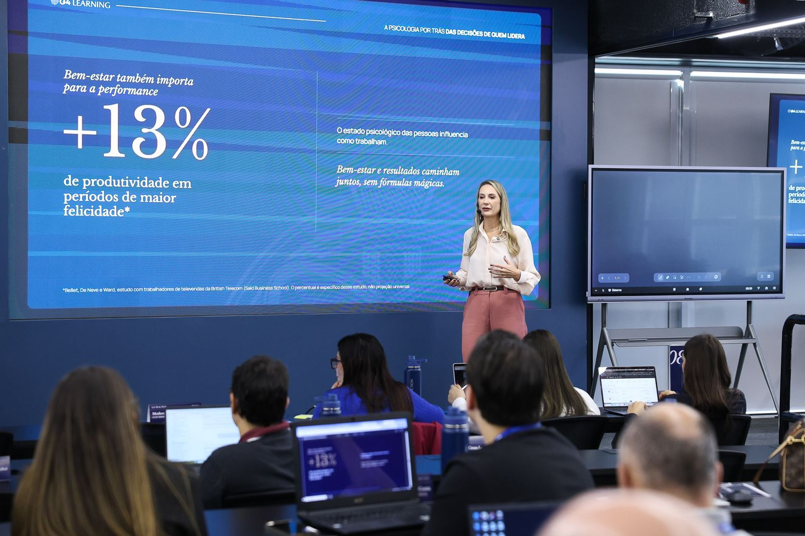
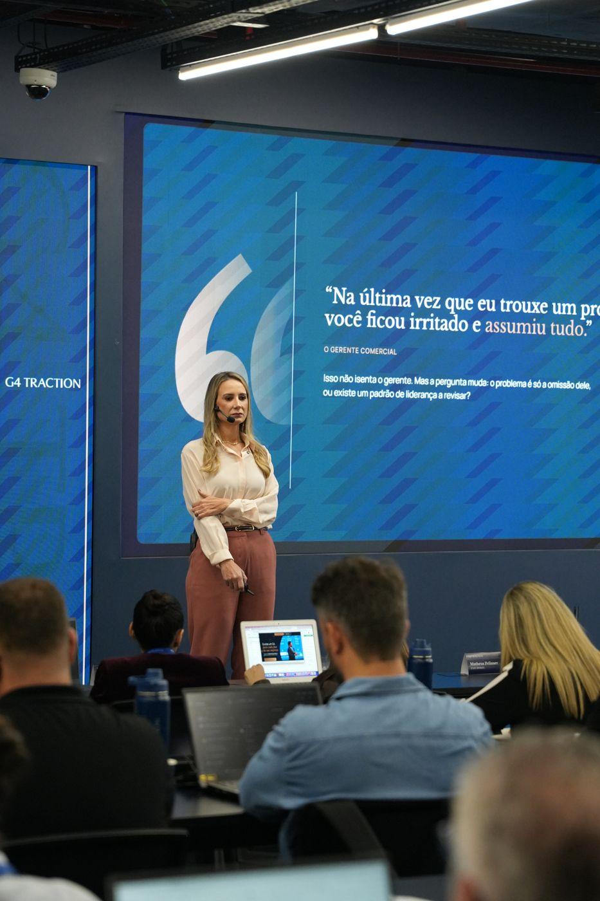
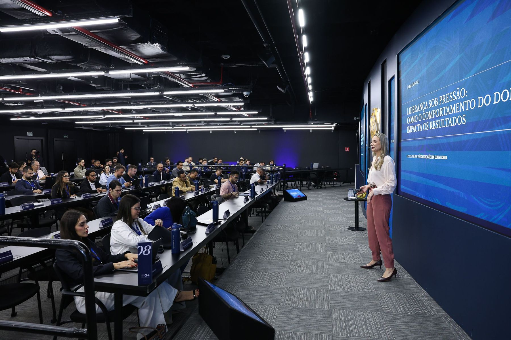

Quem é você como líder quando as coisas não acontecem como gostaria?
Na teoria, todo mundo sabe como reagiria. É fácil ser equilibrado quando está tudo certo. A aula começa onde a teoria para: quando o cliente cancela, alguém erra ou uma decisão sua é questionada.
A maturidade aparece quando o comportamento é colocado à prova.
A atualização da NR-1 passa a exigir a gestão de riscos psicossociais. Precisou de lei, como precisou para o cinto de segurança. Mas a pauta é cultura, não multa: saúde mental é preditora de performance.
Um erro. Um prejuízo. Uma decisão.
Antes de qualquer conceito, uma cena. Escolha sua primeira reação, sem pensar muito.
Sexta-feira, fim do mês, correndo para bater a meta. Um cliente estratégico cancela o contrato. O impacto no caixa é grande.
Aí você descobre que o gerente comercial sabia do risco havia duas semanas e não avisou.
Interativo · escolha uma opção
Não existe resposta certa sem todos os fatos. Repare só que a sua cabeça já formou uma hipótese sobre o gerente. Guarde essa primeira interpretação: o caso volta mais abaixo, com uma informação nova.
“A gente não é tão racional quanto imagina.”
Entre o que acontece e o que você faz existem duas etapas silenciosas. É nelas que a liderança se decide.
Interativo · toque nos 3 exemplos e veja a cadeia mudar
De noite, em casa, a janela bate.
“É um ladrão.”
Medo, palpitação.
Luta ou fuga.
É a mesma situação. A forma como a gente interpreta é que leva a uma decisão diferente.
“Ele não avisou” é fato. “Ele não se importa” é hipótese. Quando as duas coisas viram uma só, a cobrança vira ataque, e a pessoa aprende a esconder o próximo problema. Antes de reagir, pergunte: o que mais poderia explicar isso?
Ninguém é o que sente. A gente é a capacidade de sentir.
Calma, não é a hora. Espera um pouquinho.
A mensagem enviada no pico da raiva quase sempre cria um segundo problema: o atrito vira crise de relação, de reputação ou de caixa. A emoção sobe, chega ao pico e desce. Decidir depois do pico não é fraqueza. É usar a parte do cérebro que o estresse tenta desligar.
“Eu nasci assim e vou ser sempre assim” é a coisa mais feia que existe. Só tem duas certezas na vida: a morte e a mudança. Emoção também se educa.
Sob pressão, o dono centraliza ainda mais
Estresse intenso reduz a capacidade de planejar, considerar alternativas e frear respostas automáticas. Justamente quando a empresa mais precisa de decisões claras.
Não é falta de competência. Pode ser dificuldade de acessá-la sob pressão.
Deixa eu ver como tá a cara dele hoje pra ver se eu falo.A frase mais ouvida em diagnósticos de cultura
Quando o humor do dono decide quem fala, a informação não chega. Ela vai para baixo do tapete ou vira rádio corredor. E junto vai a ideia nova que alguém queria trazer.
“Vocês nunca fazem nada direito.”
“Estamos numa situação difícil. Preciso que antecipem os riscos.”
Saúde mental não é assunto subjetivo. Ela aparece nos números.
de produtividade em períodos de maior felicidade
Estudo da Universidade de Oxford com trabalhadores de televendas da British Telecom. Um contexto específico, não uma promessa.das pessoas se demitem do líder, não da empresa
“Ah, mas o cara atinge resultado.” Mas a que preço? Quantas pessoas boas estão saindo por causa dele?saúde mental passou o câncer como maior preocupação de saúde no mundo
Uma pauta que precisa sair de baixo do tapete, porque é aí que entra a prevenção.
Regular não é reprimir. E não é ser frouxo.
A cobrança fica. A qualidade da decisão muda.
Quem reage no automático acaba resolvendo sozinho e vira gargalo. A resposta regulada mantém a exigência e devolve o problema para quem precisa aprender a resolver. Três perguntas no lugar do “deixa que eu faço”:
- O que aconteceu?
- O que estava sob nosso controle?
- Como vamos recuperar e prevenir?
Eu sempre fiz tudo sozinho, sempre deu certo, então eu pego e faço, porque faço melhor do que os outros. Essa crença tem que ser quebrada.
O “deixa que eu faço” leva direto à centralização. Ninguém precisa sair do operacional nem parar de olhar os números. Mas a capacidade produtiva de uma pessoa é limitada, e a única forma de crescer é ter outras pessoas decidindo junto.
P.A.R.E. Um roteiro para o espaço entre sentir e agir
Não é teste psicológico. É um lembrete de quatro passos para interromper a resposta automática.
Perceba
O que eu sinto?
Analise
O que eu sei? O que estou supondo?
Reavalie
Que outra hipótese existe?
Escolha
Como devo agir?
No “reavalie”, vale trocar com alguém. Mas escolha bem: a amiga que sempre acha que todo cara é cafajeste não vai ajudar. Procure quem traga outra leitura do fato.

De volta às 17h45. O dono vai até o gerente perguntar por que não foi avisado. A resposta:
Na última vez que eu trouxe um problema, você ficou irritado e assumiu tudo.
A omissão continua grave. Só que agora entra outra pergunta, desconfortável: qual é a minha parte nessa história?
Poder perguntar, discordar e admitir erros sem humilhação. Trazer o problema cedo e agir sobre ele.
Tolerar negligência. Nem ambiente sem pressão, frouxo.
Filho é uma grande oportunidade de a gente se desenvolver. Eles são esponjas e repetem exatamente aquilo que a gente mais odeia.
O time funciona do mesmo jeito. Quando algo se repete, a pergunta útil é “por que meu time está agindo assim?”, e não “por que ninguém me conta nada?”.
Toda fortaleza é uma limitação e toda limitação pode ser uma fortaleza. Depende de onde eu uso.
Pedir que alguém “deixe de ser” de um jeito raramente funciona. A conversa muda quando o foco passa a ser onde aquele traço ajuda e onde atrapalha. A agressividade que fecha a venda é a mesma que trava a reunião com o time.
Mapa de destravamento do dono
O exercício que fechou a aula. Quando a gente não muda, raramente é falta de informação. Quase sempre existe um ganho escondido: se todo mundo volta para mim, eu continuo sendo importante.
O que de pior pode acontecer? Aqui a gente não é médico. A gente não mata ninguém.
Interativo · escreva e envie suas respostas
Seu rascunho fica salvo neste navegador até você enviar.
Frases da aula que valem um print

A escada se lava de cima para baixo.Antes de qualquer líder, é o dono, o empreendedor, quem fundou.
Louco hoje é quem não se trata, quem não se cuida, quem não olha para dentro de si.Há 23 anos, no interior do Rio Grande do Sul, pendurar uma placa de psicologia era ousadia.
O problema não é ter pressão. É a forma como a gente conduz.
A Mariana que está na empresa é a mesma que está dentro de casa. E se não for, deveria ser.
Quem faz tudo não faz nada.Sobre sair dos dois dias de imersão querendo mudar a empresa inteira de uma vez.
Tudo que a gente permite, a gente concorda.
Às vezes deitar a cabeça no travesseiro é o que a gente precisa para, no outro dia, tomar decisões mais assertivas.
Conversas difíceis são libertadoras. Elas destravam muita coisa nos negócios.
A sua reação ajuda a resolver o problema ou cria um segundo problema?
Diagnóstico de maturidade de liderança. Descubra em que estágio está a sua liderança e por onde começar.